今日股市王斌学习营第十四课：K线的语言大阴线
以下K线讲解仅做参考，凭此操作后果自负！
申明：K线语言是基础，我将基础语言写给大家参考，不代表能100%预测到股市未来走势，我只是通过讲解基础知识，让广大同志能知道K线基础知识是什么，然后在实践中发挥我们的口诀：该涨不涨和该跌不跌等的运用！
今天谈谈阴线。
阴线有很多种，我们重点谈的是其中的最常见常用部分阴线！
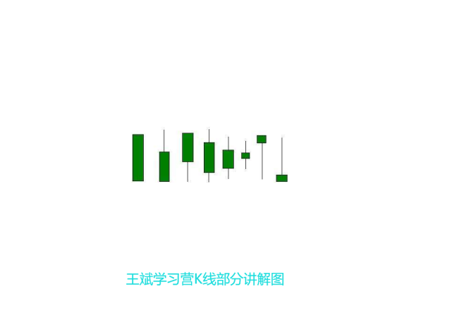
阴线在图形上表现为蓝色柱状图，我们学习营同学以后重点遇到的一定是葛兰碧第二天为主的阴线，所以，他除了有图形特点之外，还有时间特点！
第一种K线叫做大阴线，也叫作光头光脚大阴线！是下跌K线中的极端走势，是至阴之物！100%的悲观图形！开盘就是最高价，收盘是最低价，也可能是次低价收盘，阴线实体巨大，说明下跌从开盘价到收盘价的价差巨大，阴线实体表明下跌的实际幅度很大！被套盘很多，人气出现奔溃，主力坚决出局，甚至不做反弹，每次反弹都是卖出为主的盘中主力走势表现，所以，后市看淡！一定要牢记！
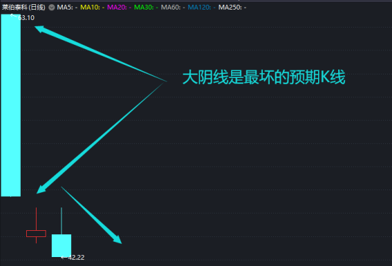
结合到图形上，大阴线或者类似图形出现在断头或者平台破位杀跌，人气奔溃的时刻居多！
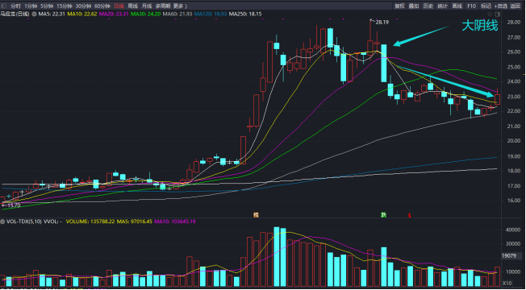
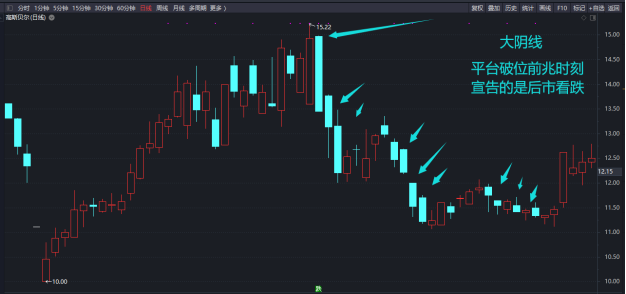
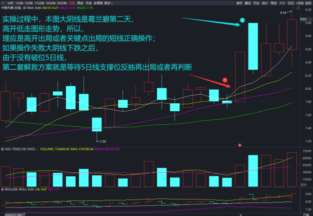
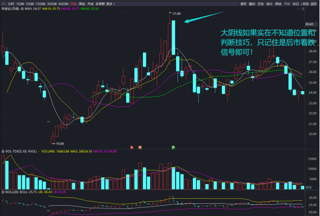
我也不要求其他太多，如果搞不懂，就记住一个图即可，断头的时候肯定是这种大阴线居多！
记得卖出逃命！
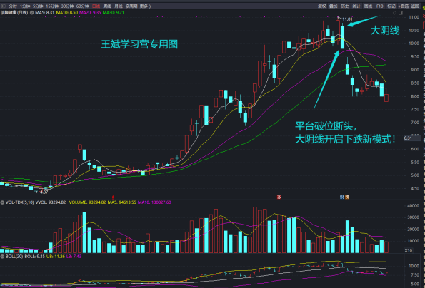
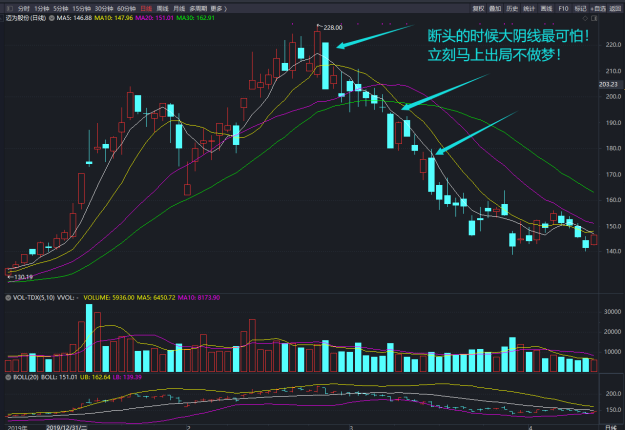
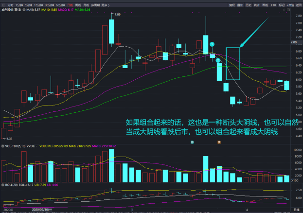
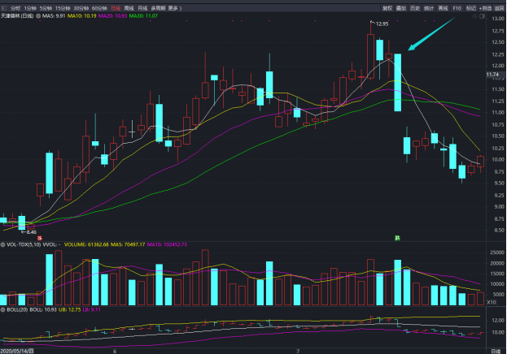
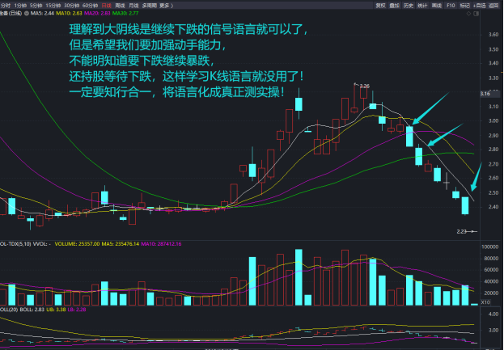
知行合一！
语言就是提前预知走势！
预知了走势，但是没有新的策略和操作才是最可怕的！
希望大家知行合一，取得成功！